Chapter 9 trans_multiomics and trans_mst class
9.1 trans_multiomics class
The trans_multiomics class integrates two or more omics data sets (typically a microbiome microtable plus one or more other microtable objects such as metabolome or transcriptome) and provides a complete supervised/unsupervised multi-block workflow powered by the mixOmics package (Rohart et al. 2017).
It wraps the most common mixOmics models (block.splsda, block.spls, spls) and adds several analysis layers that are useful in microbiome studies: cross-omics feature extraction and stability, a trans-kingdom correlation network (TkNA-style) with a bridge to the trans_network class, mediation analysis (bridging to the multimedia package), and exporters for knowledge-driven mechanism tools (MIMOSA2 / AMON / anansi).
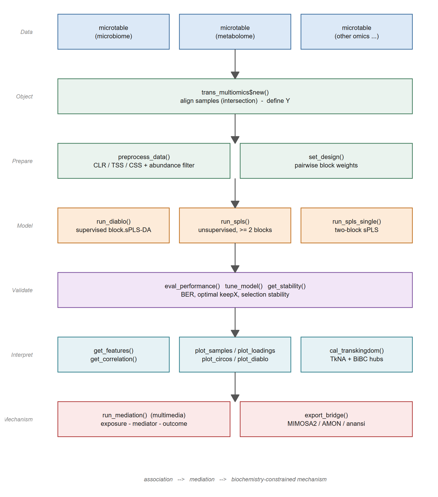
As with the other classes of microeco, each method returns the object itself (invisibly), so the steps can be chained with $, and every intermediate result is kept in the object, for example data_list, model, perf_result, res_features, res_stability, res_transkingdom and res_mediation.
The example below follows the whole pipeline on the two omics data sets shipped with microeco: prokaryotic amplicon sequencing and untargeted metabolomics from the same agricultural field experiment.
All the results shown in this section were checked with microeco 2.4.0 and mixOmics 6.36.0.
9.1.1 Prerequisites
Install the required packages first.
mixOmics is on Bioconductor; multimedia is only needed for the mediation analysis section and can be skipped if you do not use it.
9.1.2 Prepare the example data
The example uses two data sets shipped with microeco: soil_microb (prokaryotic amplicon sequencing, 1245 taxa x 90 samples) and soil_metab (untargeted metabolomics, 160 metabolites x 60 samples).
Both come from the same agricultural field experiment with crop rotation and fertilization treatments and share 60 samples across six treatment groups (Liu et al. 2021; Liu, Mansoldo, et al. 2026).
Each omics layer must be a microtable object.
The sample_table must contain a grouping column (e.g. Group) that will be used as the supervised response Y in DIABLO.
The names of the list become the block names in mixOmics.
For your own data, create one microtable per omics layer (see the microtable class section) and pass them as a named list.
9.1.3 Create the trans_multiomics object
trans_multiomics$new takes a named list of microtable objects, aligns samples by intersection, and extracts the response Y from group_col of the first sample_table.
t1 <- trans_multiomics$new(
microtables = list(microb = soil_microb, metab = soil_metab),
group_col = "Group"
)Expected messages:
30 sample(s) removed to align samples across all blocks (intersection) ...
Multi-omics data loaded with 60 samples and 2 blocks: microb, metab ...Important details:
- Samples are aligned by intersection across all blocks.
The number in the message is the total number of sample rows dropped over all blocks, so here it is 30: the 30 samples occurring only in
soil_microbare removed whilesoil_metabkeeps its 60 samples. Ymust contain at least two levels. You can also pass a named factor/character vector via thegroupargument to overridegroup_col. A named vector is matched by sample name (a warning is issued if the names are missing and the samples are then matched by order).- The original
microtableobjects are deep-cloned inside the class so later changes to the user’s data do not affect the model. All preprocessing therefore happens on the cloned data.
9.1.4 Preprocess the data
preprocess_data reuses the trans_norm machinery to apply a normalization method to each block.
For compositional microbiome/metabolome data, CLR (centered log-ratio) is recommended because it removes the compositional constraint and produces values whose sum is zero within each sample.
t1$preprocess_data(
method = "clr", # CLR transformation
pseudocount = 1, # added before log for zero values
filter_freq = 0.2 # keep features present in at least 20% of samples
)The feature filtering is delegated to microtable$filter_taxa, so the usual filtering messages of the microtable class are printed first.
Expected output (truncated):
Filter features for otu_table in the object ...
Use converted freq integer: 12 for the following filtering ...
Block 'microb': 60 samples x 1241 features after preprocessing ...
Block 'metab': 60 samples x 144 features after preprocessing ...The processed matrices (rows are samples, columns are features) are stored in t1$data_list and will be passed to mixOmics.
The argument method accepts any value supported by trans_norm$norm (e.g. "clr", "rclr", "css", "tss", "log").
For filter_freq < 1, the threshold is computed as round(n_samples * filter_freq) (here 0.2 * 60 = 12); features observed in fewer samples than this threshold are removed.
Pass an integer >= 1 if you prefer an absolute count threshold.
filter_thres adds a relative abundance threshold on the same call.
Setting filter_freq = 1 and filter_thres = NULL keeps all features.
9.1.5 Set the design matrix
The design matrix specifies how strongly two blocks should be correlated.
A small off-diagonal weight (e.g. 0.1) tends to favour classification accuracy, whereas 1 maximises the covariance between blocks and is more useful for exploratory association analysis (Singh et al. 2019).
microb metab
microb 0.0 0.1
metab 0.1 0.0You can also supply a full design matrix manually:
9.1.6 Supervised integration (block.splsda)
DIABLO (Singh et al. 2019) extends sparse PLS-DA to multiple data sets and selects correlated features across blocks that best discriminate the groups in Y.
The fitted model is stored in t1$model.
Its class is block.splsda and the latent components live on comp1 and comp2.
Choosing keepX requires balancing interpretability (small keepX -> sparse biomarker panels) and classification performance (larger keepX retains more signal).
The rule of thumb “5-20 features per block per component” works well for tens of samples per group.
The tuning section below shows how to choose keepX automatically.
9.1.7 Performance evaluation
eval_performance runs mixOmics::perf to estimate the classification error rate via cross-validation.
perf aggregates the per-block predictions with four strategies: AveragedPredict and WeightedPredict average the predicted classes over the blocks, while MajorityVote and WeightedVote take the majority (or weighted majority) class over the blocks.
The error rate of the two voting strategies is computed for each of the three distance metrics (max.dist, centroids.dist, mahalanobis.dist), so MajorityVote.error.rate and WeightedVote.error.rate are lists containing one matrix per distance metric, whereas AveragedPredict.error.rate and WeightedPredict.error.rate are single matrices (no distance is involved).
Every one of those matrices has one row per predicted class plus an Overall.ER and an Overall.BER row, and one column per component.
t1$eval_performance(method = "Mfold", folds = 5, nrepeat = 1, seed = 123)
# overall balanced error rate (BER) across prediction strategies
t1$perf_result$MajorityVote.error.rate$centroids.dist["Overall.BER", ]
t1$perf_result$WeightedVote.error.rate$centroids.dist["Overall.BER", ]
# per-block error rate (which block is more informative?)
t1$perf_result$error.rate$microb
t1$perf_result$error.rate$metabWith our example data (folds = 5, nrepeat = 1, seed = 123) the WeightedVote BER drops from 0.533 (comp1) to 0.400 (comp2, centroids.dist) and further to 0.333 (mahalanobis.dist), while MajorityVote remains high because the majority vote is conservative on a six-class problem.
BER values are cross-validated estimates, so they change with folds, nrepeat and seed; interpret the trend rather than the exact numbers.
In practice, WeightedVote or AveragedPredict are usually more informative than MajorityVote when the class sizes are balanced.
error.rate is a list with one matrix per block, each giving the error rate of that single block (rows: components, columns: distance metrics).
It complements the four aggregated strategies above and helps to decide which block carries the classification signal.
The cross-validation takes about 20 s for folds = 5, nrepeat = 10 on 60 samples.
Always set seed for reproducible cross-validation; the value is forwarded to mixOmics when supported (>= 6.3.2) and otherwise applied via set.seed().
9.1.8 Feature selection stability
The features selected by a single DIABLO fit are subject to sampling noise.
get_stability averages the selection frequency across all folds and repeats of the cross-validation performed by eval_performance, returning a tidy data.frame with columns Feature, Block, Comp, and Stability in [0, 1].
A stability close to 1 means the feature is robust across resamples; low stability suggests the feature may be an artefact of a particular data split (Liquet et al. 2012).
# eval_performance must be called first with folds/nrepeat > 1 for a meaningful stability
t1$eval_performance(folds = 5, nrepeat = 10, seed = 123)
stab <- t1$get_stability()
head(stab, 10)
# robust biomarker candidates on the first component
subset(stab, Comp == 1 & Stability >= 0.8)Typical output (truncated):
Feature Block Comp Stability
2 7acd7a55f455134030d80f19811abf4c microb 1 1.00
3 9a39a41375516bcc9c073e73b57a86df microb 1 1.00
91 Elaidic acid metab 1 1.00
93 arachidonic acid metab 1 1.00
94 oleic acid metab 1 1.00
95 palmitoleic acid metab 1 1.00
97 ribose metab 1 1.00
5 dcebcca13a3e634371704c988df13605 microb 1 0.98
96 phosphate metab 1 0.98
1 15068cd31c9596bb39a69d9a28ba9bac microb 1 0.96The leading integers are the internal row indices of the assembled table and carry no meaning.
With this example (folds = 5, nrepeat = 10, seed = 123), the subset on Comp == 1 & Stability >= 0.8 keeps 15 features on comp1.
Increase nrepeat (e.g. 50) for publication-grade stability; nrepeat = 1 only shows whether the feature survives all folds of a single split.
Note that get_stability needs the selection frequency table that perf stores in perf_result$features$stable, so it requires a sparse model fitted with keepX and evaluated with eval_performance().
9.1.9 Hyperparameter tuning (keepX)
mixOmics::tune.block.splsda searches an optimal keepX per block per component via cross-validation.
The class provides a thin wrapper tune_model.
When test_keepX is not supplied, an adaptive grid of 5%, 10% and 20% of the number of features per block is used.
t1$tune_model(
ncomp = 2,
test_keepX = list(microb = c(5, 10, 20), metab = c(5, 10, 20)),
folds = 5,
nrepeat = 1,
seed = 123
)
t1$best_keepX$microb
[1] 20 20
$metab
[1] 20 5The optimal keepX is stored in t1$best_keepX and can be reused to refit the model.
As a refit replaces every panel computed from the object, the refitted model is built in a separate copy here, so that the results in the following sections remain reproducible with the initial keepX of the supervised integration section.
# refit with the tuned keepX in a copy of the object
t1_tuned <- t1$clone(deep = TRUE)
t1_tuned$run_diablo(ncomp = 2, keepX = t1$best_keepX)
t1_tuned$get_features(comp = 1) # 40 features on comp1 (20 + 20) instead of 25Run the same refit directly on t1 (i.e. without the copy) if you want the tuned model to become the working model; the feature panels and the correlation matrix shown below will then change accordingly.
Notes and pitfalls:
mixOmicsdoes not provide a tune function for the unsupervisedblock.spls, somethodmust be"block.splsda"(which requiresY).foldsmust not exceed the smallest class size; with ten samples per groupfolds <= 10.- The grid search cost grows multiplicatively with the number of candidate values per block.
A 3 x 3 grid with
folds = 5,nrepeat = 1and 60 samples takes ~10 s on a laptop; increasenrepeatonly when you really need it.
9.1.10 Feature extraction and cross-block correlation
After a DIABLO fit, get_features extracts the selected variables on each component and returns a tidy data.frame sorted by the absolute loading.
features <- t1$get_features(comp = 1)
head(features)
table(features$Block)
# comp = 2
features2 <- t1$get_features(comp = 2)
head(features2, 6)Typical output:
Feature Block Comp Loading_value
11 palmitoleic acid metab 1 0.6524757
1 9a39a41375516bcc9c073e73b57a86df microb 1 -0.6001810
2 dcebcca13a3e634371704c988df13605 microb 1 -0.4671889
...Again the leading integers are the internal row indices of the table.
get_correlation returns the cross-block similarity matrix of the selected features on a component, thresholded by an absolute cutoff.
The result is stored in t1$res_correlation and can be exported for downstream network or pathway analyses.
cm <- t1$get_correlation(comp = 1, cutoff = 0.7)
dim(cm) # 10 rows x 15 cols in this example (microb x metab)
range(cm)Note: in mixOmics >= 6.x the returned similarity matrix has colnames but rownames may be NULL; the rows correspond to the selected features of the first block and the order follows mixOmics::selectVar.
The column names carry the block name as a suffix (e.g. palmitoleic acid_metab), because mixOmics::network labels the variables by block.
Restore the names manually if you need them:
if (is.null(rownames(cm))) {
sel <- mixOmics::selectVar(t1$model, comp = 1, block = "microb")
rownames(cm) <- sel$microb$name
}
# remove the "_<block>" suffix from the column names
colnames(cm) <- sub("_metab$", "", colnames(cm))mixOmics::network opens a graphics device internally even though no plot is requested, so a stray Rplots.pdf may appear in the working directory; it can simply be deleted.
9.1.11 Visualizations
9.1.11.1 Sample projection
plot_samples calls mixOmics::plotIndiv with style = "ggplot2" and returns a ggplot object that can be customised with + theme_xx().
p1 <- t1$plot_samples(comp = c(1, 2), blocks = "average", ellipse = TRUE)
p1
p1b <- t1$plot_samples(comp = c(1, 2), blocks = "microb", ellipse = TRUE)
p1bblocks = "average" plots the consensus components (weighted average across all blocks), which is the standard view to check whether the blocks separate the groups jointly.
Pick a single block name/index to inspect the within-block projection.
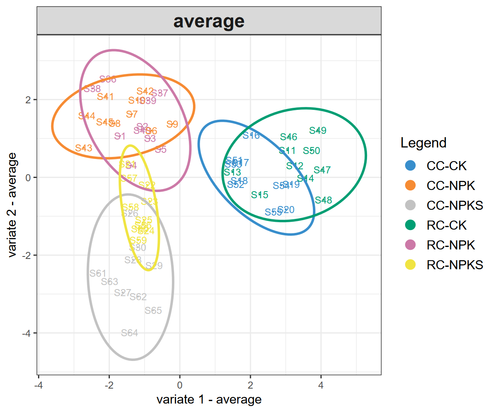
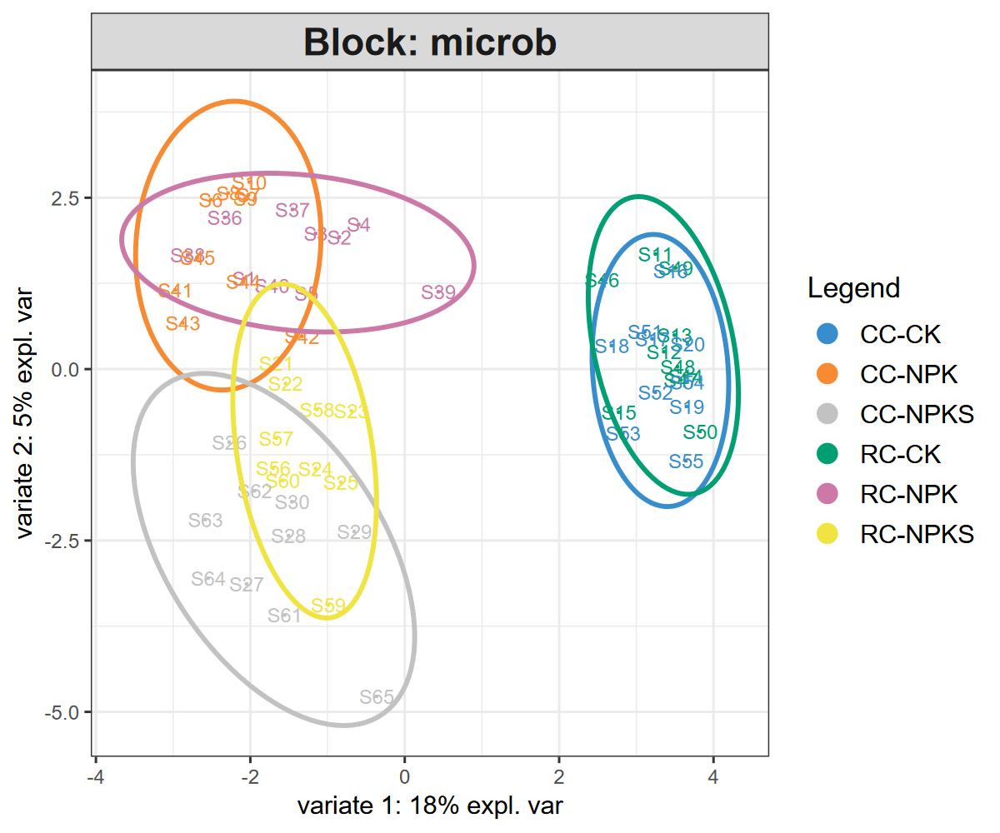
9.1.11.2 Variable loadings
plot_loadings calls mixOmics::plotLoadings and draws a bar plot of the loadings on the current graphics device.
The function returns the loading values as a list (one element per block, each a data.frame with the columns importance and names), not a ggplot object, so use it directly without ggsave():
t1$plot_loadings(comp = 1, block = "microb")
loadings <- t1$plot_loadings(comp = 1, block = "metab")
head(loadings$metab) # the loading valuesThe block argument must always be given for the multi-block models; the default NULL is not resolved to the first block and raises an error.
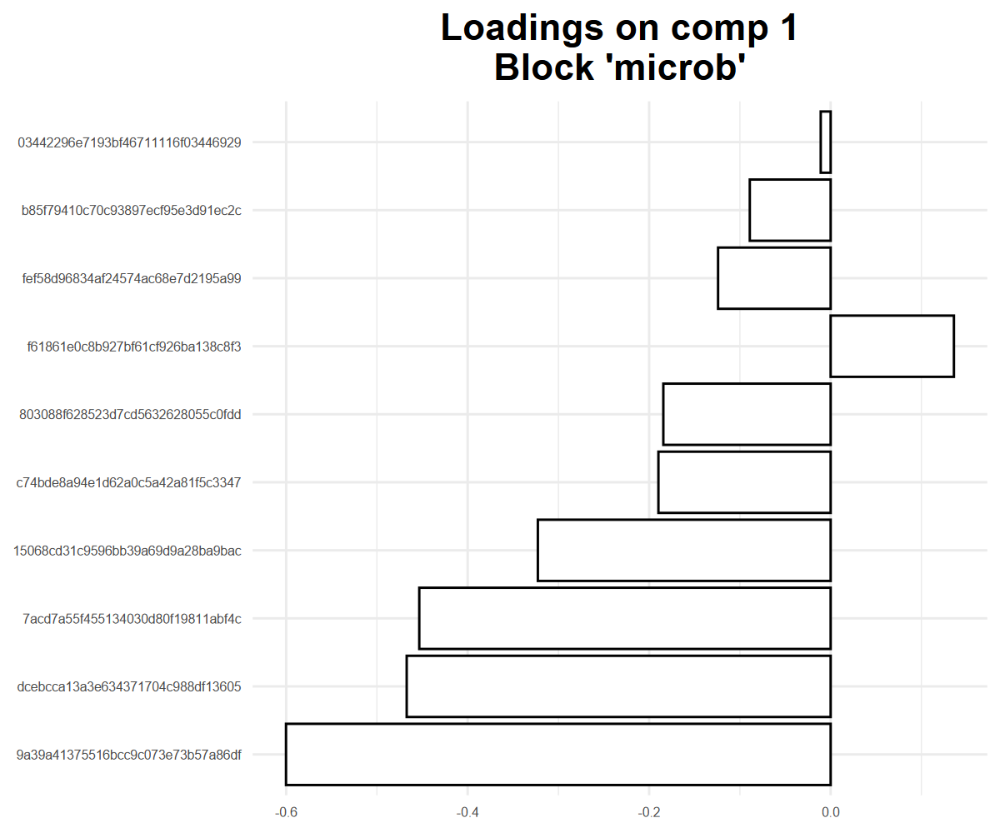
9.1.11.3 DIABLO diagnostic plot
plot_diablo shows the correlation between the latent components of each block on the specified ncomp.
The lower panel gives the Pearson correlation coefficient and the upper panel the corresponding scatter plot, so the plot is used to check whether DIABLO succeeded in maximising the correlation between the components of the different blocks (Singh et al. 2019).
Note that the design weight is a link weight and not the expected correlation value: the paired components of the two blocks are correlated by 0.75 and 0.61 here with weight = 0.1, i.e. well above the design value.
Raising the weight to 1 enforces the link more strongly and usually increases the correlation of the paired components.
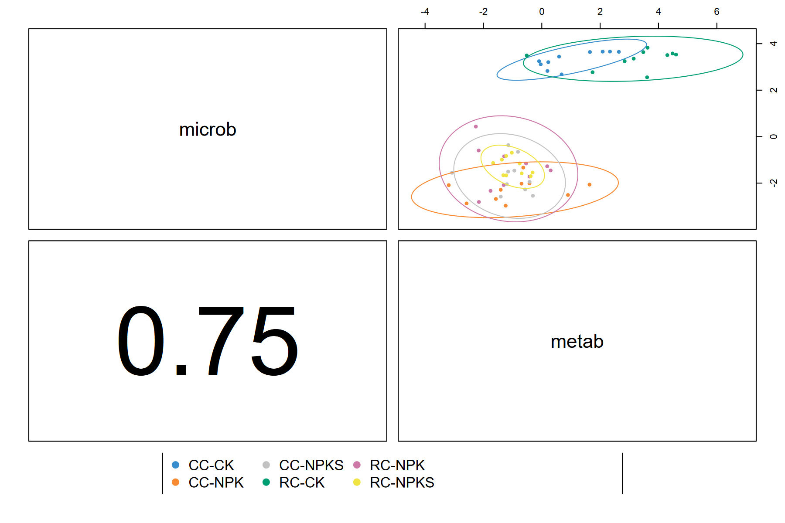
9.1.11.4 Relevance network and circos plot
plot_cor_network displays the cross-block correlation network of the selected features, thresholded by cutoff.
plot_circos shows the same information in a circos layout.
Both rely on the underlying mixOmics::network and mixOmics::circosPlot; pass additional arguments through ... when needed.
The default cutoff = 0.7 requires that at least some of the selected features are correlated above 0.7; mixOmics stops when the cutoff exceeds the largest value of the similarity matrix.
Check range(t1$get_correlation(comp = 1)) (here -0.85 to 0.78) and lower the cutoff when the panel is only weakly correlated.
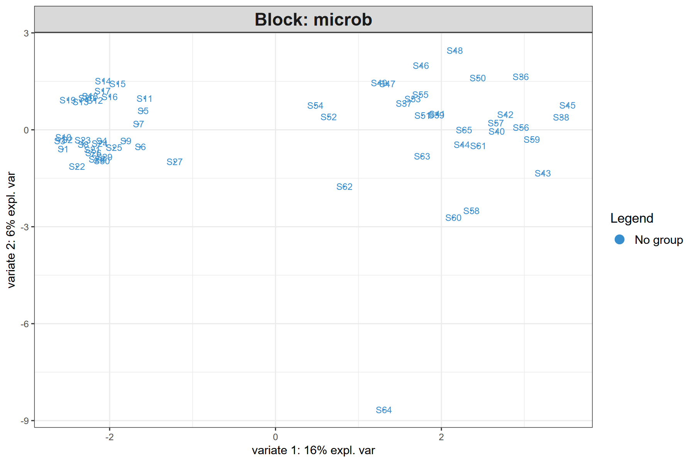
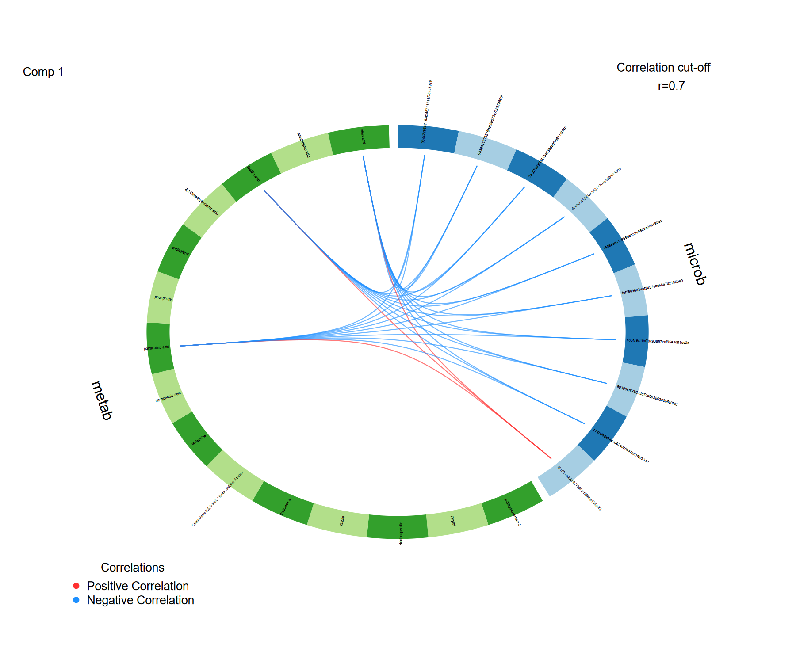
9.1.11.5 Clustered image map
plot_heatmap calls mixOmics::cimDiablo to draw a clustered image map (CIM) of the selected features across samples.
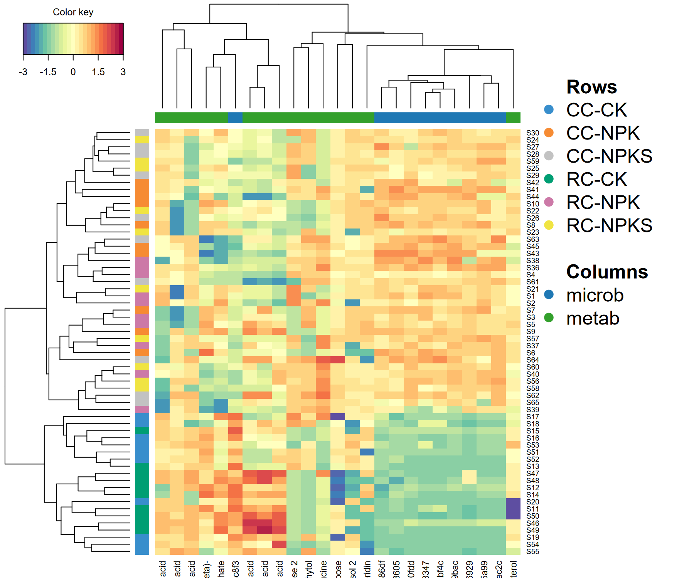
9.1.11.6 Per-class AUC
cal_auroc runs mixOmics::auroc for each block and each component, returning per-class AUCs and a ggplot ROC plot.
The function detects the correct roc.comp vs comp argument name across mixOmics versions, so it is safe to use with both 6.3.x and 6.4.x.
$comp1
AUC p-value
CC-CK vs Other(s) 0.712 3.550e-02
CC-NPK vs Other(s) 0.644 1.532e-01
CC-NPKS vs Other(s) 0.624 2.188e-01
RC-CK vs Other(s) 0.932 1.832e-05 # RC-CK is best separated by metabolites
RC-NPK vs Other(s) 0.706 4.105e-02
RC-NPKS vs Other(s) 0.670 9.179e-02The AUC tables of all blocks are the list elements named after the blocks (au$microb, au$metab), one table per component.
The ROC plot is stored separately as au$graph.<block> (a list with one ggplot per component).
mixOmics::auroc only builds the plot of the first block by default, so use au$graph.microb; pass roc.block = 2 to cal_auroc to get the plot of the second block instead.
9.1.12 Unsupervised alternatives
When no grouping is available, or when the goal is to explore the covariance structure between two data sets rather than to classify samples, use the unsupervised block.spls or spls engines.
run_spls performs multi-block sparse PLS.
Because mixOmics::block.spls requires a numeric response matrix, one block must be designated as the response via Y_block (passed internally as indY).
In that case keepX must be supplied for all blocks (including the response block) because mixOmics ignores keepY when indY is used.
t2 <- trans_multiomics$new(
microtables = list(microb = soil_microb, metab = soil_metab),
group = NULL,
group_col = NULL
)
t2$preprocess_data(method = "clr", filter_freq = 0.2)
t2$run_spls(
ncomp = 2,
Y_block = "metab",
mode = "regression",
keepX = list(microb = c(10, 10), metab = c(10, 10))
)
p <- t2$plot_samples(comp = c(1, 2)) # blocks = "average" may fall back to a single block on block.spls
print(p)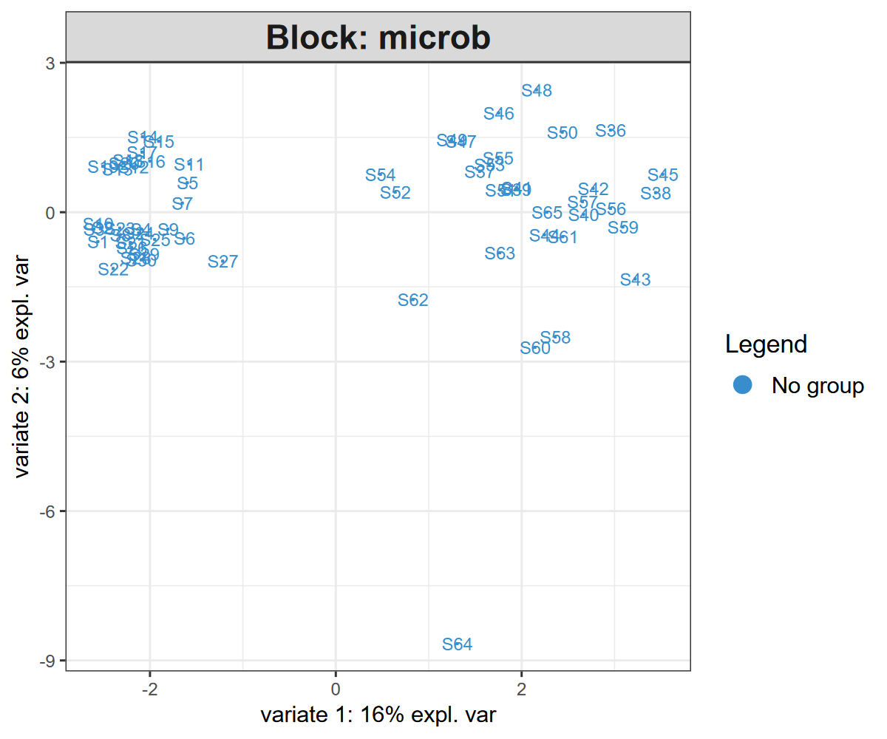
For a strictly two-block association, use run_spls_single which wraps mixOmics::spls:
t3 <- trans_multiomics$new(
microtables = list(microb = soil_microb, metab = soil_metab),
group_col = "Group"
)
t3$preprocess_data(method = "clr", filter_freq = 0.2)
t3$run_spls_single(
X_block = "microb", Y_block = "metab",
ncomp = 2,
keepX = c(10, 10), keepY = c(10, 10)
)On these unsupervised models, get_features, get_correlation, plot_samples and plot_cor_network work as described above (on the two-block spls model, plot_samples warns that blocks is ignored because the model is not multiblock).
plot_loadings also works: on a block.spls object use the original block names (microb, metab), but on the two-block spls model mixOmics internally renames the blocks to X and Y, so you must pass block = "X" or block = "Y".
However, plot_circos, plot_heatmap and plot_diablo only support the supervised block.splsda model: their underlying mixOmics functions (circosPlot, cimDiablo, plotDiablo) expect a supervised object and fail on unsupervised models.
9.1.13 Trans-kingdom network (TkNA)
Beyond block-level integration, trans_multiomics can build a bipartite cross-omics association network following the Transkingdom Network Analysis (TkNA) framework.
The pipeline has three steps (Newman et al. 2024):
- Differential feature filtering within each block (optional).
Features whose adjusted p-value is above
diff_p(Kruskal-Wallis, ANOVA or Wilcoxon, depending ondiff_test) are dropped. This step removes uninformative background noise before computing associations. - Cross-block correlation between every remaining feature of one block and every remaining feature of the other block(s).
Spearman is recommended for CLR-transformed compositional data.
Pearson is also available.
A
covariatesdata.frame(with rownames matching the sample names) is regressed out from every feature before the correlation, mirroring the MaAsLin2 confounder handling (Mallick et al. 2021). - Bipartite Betweenness Centrality (BiBC) quantifies how often a node lies on the shortest path between two nodes of different blocks.
Features with high BiBC are flagged as cross-omics hubs (top
hub_quantileamong nodes with BiBC > 0).
t1$cal_transkingdom(
corr_method = "spearman",
corr_thres = 0.6,
p_thres = 0.05,
p_adjust = "BH",
diff_test = "kruskal",
diff_p = 0.05
)
# node table: Feature, Block, Diff_p, BiBC, Hub
head(t1$res_transkingdom$nodes)
# edge table: From, To, Corr, P, P_adj, weight
head(t1$res_transkingdom$edges)
# cross-omics hub candidates
subset(t1$res_transkingdom$nodes, Hub)Typical output (truncated):
Differential filtering (kruskal, BH-adjusted p <= 0.05) retained 798/1385 features ...
Cross-block correlation (spearman, BH-adjusted p <= 0.05, |corr| >= 0.6) retained 13/2385 candidate edges ...
Trans-kingdom network built: 798 nodes, 13 edges, 2 hub(s) ... Feature Block Diff_p BiBC Hub
796 palmitoleic acid metab 0.009163057 6 TRUE
797 arachidonic acid metab 0.026647565 4 TRUEThe weight column of the edge table is the distance-like weight 1 - |Corr| used internally for the shortest paths of the BiBC computation; it is not the association strength (use Corr for that).
plot_transkingdom draws the bipartite network with ggplot2 (Fruchterman-Reingold layout weighted by |correlation|, or a circle layout):
t1$plot_transkingdom(label = "hub") # only label hubs
t1$plot_transkingdom(label = "all", layout = "circle")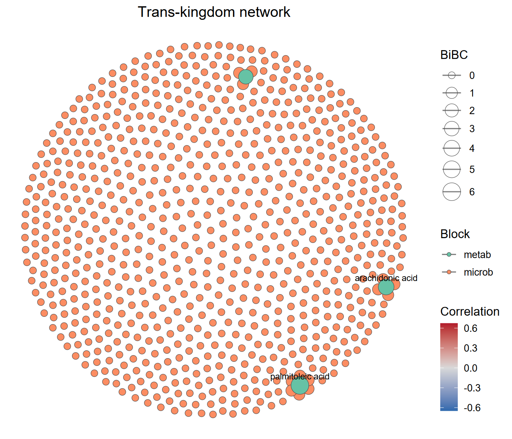
Regressing out confounders (e.g. sequencing batch, host age) reduces spurious cross-layer edges.
The covariates argument must be a data.frame whose rownames match the sample names:
cov_df <- data.frame(
batch = factor(rep(c("B1", "B2"), length.out = nrow(t1$data_list$microb))),
row.names = rownames(t1$data_list$microb)
)
t1$cal_transkingdom(covariates = cov_df, corr_thres = 0.5)Caveats:
- The network is a data-driven association network, not a causal network. Prioritised hubs/edges should be validated with independent cohorts or perturbation experiments.
- If
diff_testremoves all features from a block, the block is automatically retained with a warning. Lowerdiff_por change the test to keep enough candidates. - If no edge passes the
corr_thres/p_thresthresholds, a warning is issued and an empty graph is returned. diff_test = "wilcox"requires exactly two groups inY; use"kruskal"or"aov"for multi-group data.
9.1.14 Bridge to the trans_network class
convert_transkingdom converts the trans-kingdom network into a trans_network object, so that the whole downstream network toolkit of the trans_network class becomes available: module detection (cal_module), node/edge property tables (get_node_table / get_edge_table), network topological attributes (cal_network_attr), sub-network extraction (subset_network), eigengene analysis (cal_eigen), random network comparison (random_network) and network visualization (plot_network).
net1 <- t1$convert_transkingdom()
net1$cal_module()
net1$get_node_table(node_roles = TRUE)
head(net1$res_node_table)The conversion follows the conventions of the correlation networks created by trans_network$cal_network: the edge weight is re-defined as the absolute correlation and the edge label as the correlation sign (“+”/“-”), while the node attributes Block, Diff_p, BiBC and Hub are kept, so they appear in the node table together with the usual network attributes (degree, betweenness, module, z, p, …).
The original (non-transformed) abundances of the network features are taken from dataset_list to fill data_abund, data_relabund and sample_table, and the tax_table slots of all blocks are merged, which is convenient for a microbe-metabolite network.
The returned object can then be plotted with the trans_network visualizations, for example:
net1$cal_network_attr()
net1$res_network_attr
net1$plot_network(method = "ggraph", node_color = "module")Note that the taxonomy-dependent functions of trans_network, e.g. cal_sum_links and plot_sum_links, need a taxonomic column shared by all the involved blocks; for a bipartite cross-omics network (e.g. microbe vs metabolite) such a column usually does not exist, so those functions are not applicable unless the blocks use the same feature annotation.
Feature names must be unique across the blocks; duplicated names are reported with an error and should be renamed before the conversion.
9.1.15 Mediation analysis (multimedia bridge)
High-dimensional mediation analysis asks whether the effect of an exposure on an outcome is transmitted through a set of mediators.
The multimedia package implements a sparse, high-dimensional mediation workflow (Jiang et al. 2024) that fits naturally on top of trans_multiomics.
A typical microbiome question is “do specific metabolites mediate the effect of a microbial community on a host phenotype?”.
The run_mediation method:
- takes the exposure, mediator and outcome as either
microtableblocks (named indata_list_names) or low-dimensional named vectors/factors, - reuses the CLR-transformed matrices from
t1$data_list, - optionally restricts the analysis to features previously selected by
get_featuresviafeatures, - caps the number of features per block with
max_featuresto keep the regression tractable, - supports three model engines:
"glmnet"(default, recommended for high-dimensional blocks),"lm"(low-dimensional exposure only) and"rf".
if (!requireNamespace("multimedia", quietly = TRUE)) {
install.packages("multimedia")
}
set.seed(123)
# simulate a continuous phenotype (replace with your real phenotype vector)
pheno <- t1$data_list$metab[, 1] + rnorm(nrow(t1$data_list$metab), sd = 0.5)
names(pheno) <- rownames(t1$data_list$metab)
t1$run_mediation(
exposure = "microb", # microbial block (high-dimensional)
mediator = "metab", # metabolite block
outcome = pheno, # named vector matching the samples
model = "glmnet",
max_features = 50, # cap each block at the top 50 most variable features
n_boot = 0 # 0 = skip bootstrap (use 1000 for final results)
)
# total effect decomposed
t1$res_mediation$direct_effect # exposure -> outcome bypassing the mediator
t1$res_mediation$indirect_overall # total indirect effect through mediators
head(t1$res_mediation$indirect_pathwise) # per-mediator pathway effectTo focus the analysis on DIABLO-prioritised features, pass them via features:
features <- t1$get_features(comp = 1)
t1$run_mediation(
exposure = "microb", mediator = "metab", outcome = pheno,
features = list(
microb = unique(features$Feature[features$Block == "microb"]),
metab = unique(features$Feature[features$Block == "metab"])
)
)Implementation notes:
multimediabuilds R formulas from the variable names, so metabolite names like"trehalose+d-Glucoheptose 1"would crash the formula parser.run_mediationtransparently replaces the names with syntactically valid synthetic names (V1,V2, …) and restores the original names in the returned effect tables. The mapping is preserved int1$res_mediation$name_map.- The engine chosen by
modelis passed tomultimediaas the outcome estimator; the mediator model keeps the defaultlm_model()ofmultimedia, i.e. a plain linear model of each mediator on the exposure variables. Keepmax_features(orfeatures) small when the exposure is high-dimensional, otherwise that inner model becomes over-parameterised. n_boot > 0addsres_mediation$bootstrapwith the bootstrap distributions of the direct, overall indirect and pathwise indirect effects.- The “causal” interpretation of the indirect effects still relies on the assumed chain ordering and on the strong ignorability assumption; longitudinal or perturbation data are needed for causal claims.
- For binary factors in
exposureoroutcome, pass a 2-level factor or a 0/1 numeric vector.
9.1.16 Export feature tables for knowledge tools
DIABLO and TkNA produce data-driven candidate associations, but they say nothing about the biochemical plausibility of a microbe -> metabolite link.
Knowledge-driven tools fill this gap by constraining associations to known reactions.
export_bridge writes the abundance tables of two blocks into the input formats expected by three popular tools:
| Target | Output |
|---|---|
mimosa2 |
two tab-separated abundance tables (<file>_ko.txt, <file>_metabolites.txt), features as rows and samples as columns |
amon |
two plain-text ID lists (<file>_ko_ids.txt, <file>_metabolite_ids.txt), one KEGG ID per line |
anansi |
the same two tab-separated tables as mimosa2 |
t1$export_bridge(
target = "mimosa2",
file = "./bridge/mimosa_input",
ko_block = "microb",
metab_block = "metab"
)
# export only the DIABLO-prioritised features
features <- t1$get_features(comp = 1)
t1$export_bridge(
target = "mimosa2",
file = "./bridge/mimosa_selected",
ko_block = "microb",
metab_block = "metab",
features = list(
microb = unique(features$Feature[features$Block == "microb"]),
metab = unique(features$Feature[features$Block == "metab"])
)
)For the metabolite names, metab_id_table (a two-column data.frame: original name + KEGG ID) converts them to KEGG compound IDs, which is what all three tools expect.
Without it, the original names are kept and a message reminds you that KEGG IDs are expected.
When ko_block / metab_block are not given, the first block and the block whose name contains “metab” are used.
Note that the exported tables come from t1$dataset_list (the original abundances), not from the CLR-transformed t1$data_list, because these tools expect raw counts or relative abundances.
9.1.17 Suggested workflow
A practical ladder from data to mechanism for a typical microbe + metabolite study:
- Load and align (
trans_multiomics$new): make sure eachmicrotablecarries the same sample IDs and a clean grouping column. - Preprocess with
preprocess_data(method = "clr", filter_freq = 0.2)for compositional blocks; consider additionalfilter_thresfor very sparse features. - Run DIABLO with a small initial
keepX(e.g.c(10, 10)per block per component) to get a first sanity-check plot (plot_samples). - Evaluate performance with
eval_performance(folds = 5, nrepeat = 10, seed = ...); compare WeightedVote vs AveragedPredict to choose the bestncomp. - Tune
keepXwithtune_model(start with a coarse grid; refine around the optimum). - Refit with
run_diablo(keepX = t1$best_keepX)and extract the finalget_featurespanel. - Stability-check with
get_stabilityand keep only the features withStability >= 0.8for downstream interpretation. - Visualise with
plot_samples,plot_loadings,plot_diablo,plot_circos(orplot_cor_networkfor an explicit graph). - Cross-omics associations with
cal_transkingdom; explore withplot_transkingdomand follow up on theHubfeatures, then hand the network over to the trans_network class withconvert_transkingdom. - Mediation with
run_mediation(requiresmultimedia) to quantify exposure -> mediator -> outcome pathways, optionally restricted to the DIABLO / TkNA-prioritised features. - Mechanism filtering with
export_bridgeto feed the candidates into MIMOSA2 / AMON / anansi and retain only biochemically plausible links.
9.1.18 Key points
- Block sizes:
mixOmics::block.splsdarequires at least 2 levels ofY;block.splsdoes not useYand needsindY(handled byY_blockinrun_spls). - Small class sizes:
foldsineval_performanceandtune_modelmust not exceed the smallest class size inY. With 10 samples per group usefolds <= 10. - Reproducibility: always pass
seedtotune_modelandeval_performance. The seed is forwarded tomixOmicswhen supported, otherwise applied viaset.seed. - Plot types:
plot_samplesreturns aggplot;plot_loadingsdraws on the current device and returns alistof loadingdata.frames, not aggplot– do not pipe it toggsave(). plot_loadingsblock argument: it must be supplied explicitly for multi-block models; for the two-blocksplsmodel useblock = "X"or"Y".get_correlationnames: inmixOmics>= 6.x the returned similarity matrix has column names with a_<block>suffix, while the row names may beNULL; restore the rows frommixOmics::selectVarif needed.cutoffof the correlation network:mixOmicsstops whencutoffexceeds the largest value of the similarity matrix, so lower it for weakly correlated blocks (checkrange(t1$get_correlation(comp = 1))).- More than two blocks:
mixOmics::networkreturns one similarity matrix per block pair, soget_correlationneeds exactly two blocks selected viablock = c(...)(or a model with two blocks). - Large feature panels: DIABLO with thousands of features per block is slow.
Apply
filter_freqand/orfilter_thresinpreprocess_databefore the tuning step. - Refitting: a new
run_diabloreplaces the model and invalidates the panels and tables computed from the previous one; refit a copy of the object (t1$clone(deep = TRUE)) if both models must be kept. - Unsupervised models:
plot_circos,plot_heatmapandplot_diabloonly work on the supervisedblock.splsdamodel.
9.2 trans_mst class
Microbial source tracking (MST) (Shenhav et al. 2019) is used to answer a simple but important question: for a given community, where do its members come from? In such an analysis, the community of interest is called the sink, and the candidate communities that may contribute to it are called sources. The output is usually a set of proportions, i.e., how much of the sink can be attributed to each source plus an unknown (unassigned) fraction. Typical applications include tracing the transmission of microbes along the soil-plant continuum (e.g., bulk soil -> rhizosphere soil -> root endophyte), detecting contamination in low-biomass samples, and tracking the formation of developing microbial communities.
Starting from version 2.4.0, the microeco package provides the trans_mst class for microbial source tracking.
It is a wrapper of FEAST (Fast Expectation-maximization for microbial Source Tracking) (Shenhav et al. 2019),
a scalable expectation-maximization framework that can estimate the contribution of thousands of
potential source environments simultaneously.
The advantage of integrating FEAST into microeco is that the whole analysis can be performed
directly on a microtable object, so that the preprocessing power of the microeco package
(e.g., taxonomic filtering, sample subsetting and data transformation) is fully reused.
The main functions of the trans_mst class are:
trans_mst$new: create the object from a microtable object.cal_mst: run the source tracking for one transmission step.cal_mst_chain: run a chain of transmission steps in one call.plot_mst: plot the contribution proportions as a stacked barplot with ggplot2.
Please install the FEAST package first, as it is not on CRAN but on GitHub.
# install.packages("remotes")
remotes::install_github("cozygene/FEAST")
library(microeco)
# for the pipe operator %>%
library(magrittr)
library(ggplot2)9.2.1 Prepare the example data
The example data is soil_microb, a microtable object of prokaryotic amplicon sequencing data
from an agricultural field experiment with crop rotation and fertilization treatments.
The Compartment column in sample_table represents the sampling compartments,
i.e., ‘Bulk soil’, ‘Rhizosphere’ and ‘Endophyte’ (root endophyte), with 30 samples for each compartment.
The Plant_ID column denotes the unique plant individual that each sample belongs to,
so that the three samples sharing the same Plant_ID are from the same plant
and can be treated as a paired source-sink set.
The Cropping and Fertilization columns are the two experimental factors and
the Group column is the combination of them.
Note that FEAST requires raw counts (integers), not a relative abundance or rarefied table,
because the estimation relies on the multinomial sampling of reads.
If non-integer values are detected in the otu_table, they are automatically converted by ceiling() with a message.
9.2.2 Create the object
There are three parameters that can be used when creating a trans_mst object:
dataset is the microtable object;
env_col is a column name in sample_table used to describe the environment of each sample,
i.e., the ‘Env’ information required by FEAST;
filter_thres is the relative abundance threshold used to filter low-abundance taxa
(delegated to the filter_taxa function of the microtable class;
taxa with a total relative abundance lower than the threshold across all samples are removed).
Filtering the very low-abundance taxa is often useful to reduce the noise and speed up the estimation.
It should be noted that the input microtable object is deep-copied inside the object, so all subsequent operations concerning the data filtering will not change the original microtable object.
9.2.4 Source tracking with different source sets
In many experimental designs, each sink has its own source set.
For instance, a root endophyte sample should be traced back to the bulk soil and rhizosphere soil of
the same plant individual, instead of a general pool containing all the plants.
This is realized by different_sources_flag = 1 together with the id_col parameter.
Samples sharing the same value of id_col (here Plant_ID) are considered as one paired group,
and only the source samples within the same group are used for the sink of that group.
Therefore, each pairing group can contain at most one sink sample
(a group with multiple sinks stops with an error),
and each sink must have at least one source sample in the same group;
the source samples without any paired sink are excluded automatically with a message.
t1$cal_mst(sources = c("Bulk soil", "Rhizosphere"), sinks = "Endophyte",
different_sources_flag = 1, id_col = "Plant_ID", EM_iterations = 1000, label = "soil2root")
# now there are two runs stored in the object
t1
head(t1$res_mst_env[["soil2root"]])In the different-sources mode, the sources that do not belong to the source set of a given sink are NA in res_mst.
These NA values are automatically removed in the plot, and they are also skipped when aggregating
the contributions by source environment in res_mst_env.
For each sink, the non-NA contributions (including ‘Unknown’) still sum to 1.
9.2.5 Run sequential steps in one call
The transmission of microbes is often a chain rather than a single step.
The cal_mst_chain function is a convenient wrapper of cal_mst,
where each element of the steps argument is a list of the parameters passed to cal_mst.
The results are stored with the labels ‘step1’, ‘step2’, … unless a custom label is provided.
t1 <- trans_mst$new(dataset = soil_microb, env_col = "Compartment")
t1$cal_mst_chain(steps = list(
list(sources = "Bulk soil", sinks = "Rhizosphere", EM_iterations = 1000, label = "bulk2rhizo"),
list(sources = c("Bulk soil", "Rhizosphere"), sinks = "Endophyte",
different_sources_flag = 1, id_col = "Plant_ID", EM_iterations = 1000, label = "soil2root")
))
# all the stored runs
names(t1$res_mst)9.2.6 Specify sources and sinks by sample names
Instead of using environment values, the sources and sinks can also be assigned by explicit sample names
with the source_samples and sink_samples parameters.
This is useful when the source/sink assignment has no correspondence with any existing column of sample_table.
Note that sources and source_samples cannot be provided at the same time (the same for sinks and sink_samples),
and no sample can be assigned to both sources and sinks.
# pick some bulk soil samples as sources and some rhizosphere samples as sinks
st_tmp <- soil_microb$sample_table
source_samples <- rownames(st_tmp)[st_tmp$Compartment == "Bulk soil"][1:10]
sink_samples <- rownames(st_tmp)[st_tmp$Compartment == "Rhizosphere"][1:10]
t1$cal_mst(source_samples = source_samples, sink_samples = sink_samples, EM_iterations = 1000, label = "custom")9.2.7 Visualization
The plot_mst function returns a ggplot2 object, so that it can be further modified before saving.
By default, the environment-level result (res_mst_env) of the first run is plotted.
The group_sink parameter is used to group (and facet) the sinks according to a column of sample_table,
which is very useful to compare the contribution patterns among treatments.
# the first run with the environment-level result
t1$plot_mst(use_run = "bulk2rhizo", group_sink = "Group")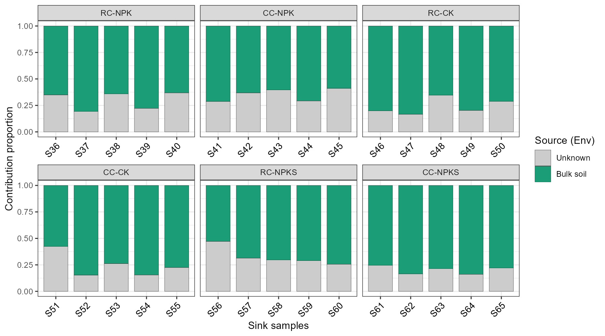
In this example, the bulk soil explains most of the rhizosphere soil communities (around 60% - 80% for individual samples), and the remaining part is assigned to the unknown sources.
The second step of the transmission is shown below, in which each root endophyte sample uses the bulk soil and rhizosphere soil of the same plant individual as sources. Please note that the running time of this step is much shorter than the first one, as only two paired source samples are used for each sink in the different-sources mode.
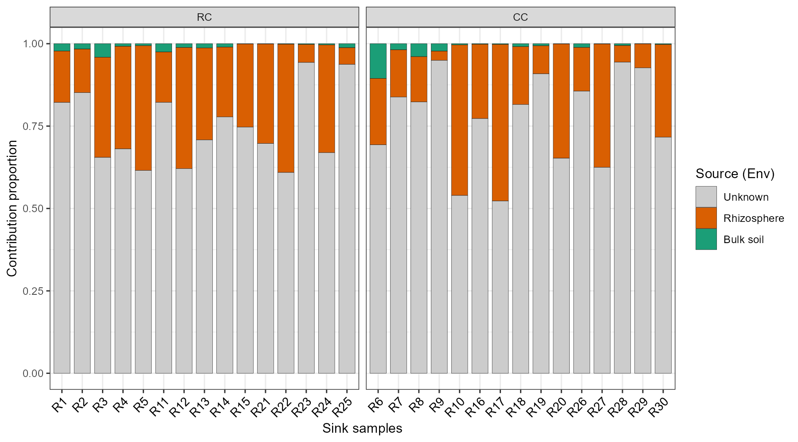
Consistent with the ecological expectation, the rhizosphere soil contributes more to the root endophyte communities than the bulk soil, indicating the directional transfer of microbes along the soil-plant continuum.
The use_env = FALSE parameter switches to the sample-level result (res_mst),
where each source sample is shown separately.
It is helpful to check whether particular source samples dominate the contribution.
Please note that a large number of source samples can make the legend too crowded,
so this option is more suitable for a small source set, such as the small example above.
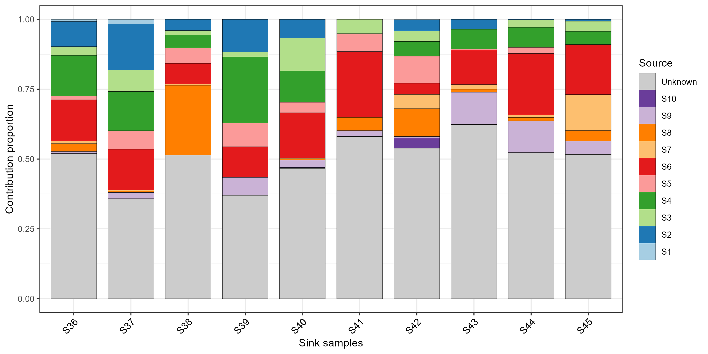
More parameters are available for the details of the plot, e.g., show_unknown (whether to show the ‘Unknown’ proportion),
colors, unknown_color, bar_width, xtext_size, xtext_angle,
legend_title (the legend title) and facet_scales (the scales argument of facet_wrap).
Filling each bar with the same order in all facets is controlled by the levels of the Source factor,
which follows the column order of the result matrix.
# hide the Unknown proportion and customize the colors
t1$plot_mst(use_run = "soil2root", group_sink = "Cropping", show_unknown = FALSE,
colors = c("#E64B35FF", "#4DBBD5FF"), xtext_size = 8, xtext_angle = 90)
# save the plot
ggsave("MST_soil2root.pdf", t1$plot_mst(use_run = "soil2root", group_sink = "Cropping"), width = 8, height = 4)9.2.8 Downstream analysis of the results
As the results are stored as plain matrices, they can be easily combined with the other classes of microeco for further analysis. For instance, the contribution proportions can be compared among the fertilization treatments.
# take the environment-level result of the soil -> root step
contrib <- t1$res_mst_env[["soil2root"]]
# add the group information of the sinks
contrib_df <- data.frame(SampleID = rownames(contrib), contrib, check.names = FALSE)
contrib_df$Fertilization <- soil_microb$sample_table[contrib_df$SampleID, "Fertilization"]
# make a long table for plotting
plot_df <- reshape2::melt(contrib_df, measure.vars = c("Bulk soil", "Rhizosphere", "Unknown"),
variable.name = "Source", value.name = "Contribution")
ggplot(plot_df, aes(x = Fertilization, y = Contribution, fill = Source)) +
geom_boxplot(width = 0.6, outlier.alpha = 0) +
stat_summary(fun = mean, geom = "point", position = position_dodge(width = 0.6)) +
scale_y_continuous(expand = expansion(mult = c(0, 0.05))) +
labs(x = NULL, y = "Contribution proportion") +
theme_bw()
# save the tables for further use
write.csv(t1$res_mst[["soil2root"]], "MST_soil2root_sample_level.csv")
write.csv(t1$res_mst_env[["soil2root"]], "MST_soil2root_env_level.csv")